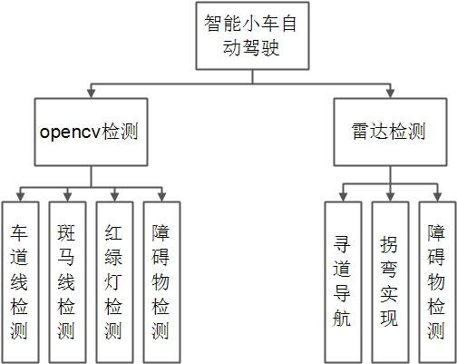
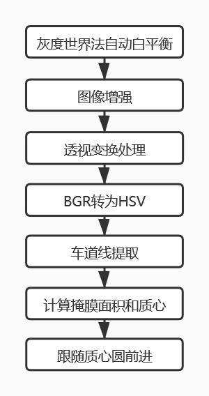
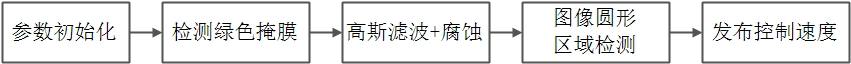

项目介绍
-
此次系统需要机器人小车的自动驾驶。此次系统主要实现目标为：利用opencv等其他技术实现机器人的自动驾驶，能够成功自动巡线并拐弯，
能够识别红绿灯和斑马线并进行响应操作。其模块图如下图所示，其实现的主要功能有：(1)识别车道线；(2)雷达导航；
(3)行人检测；(4)红绿灯识别；(5)斑马线识别
- 
相关技术
-
convertScaleAb：位深转化函数，可将任意类型的数据转化为CV_8UC1
-
warpPerspective：透视变换函数，成像投影到一个新的视平面
-
convertScaleAb
-
convertScaleAb
车道线cv识别
-
1.对采集到的图像进行一系列的处理(convertScaleAbs以及warpPerspective)
-
2.车道线提取，定义HSV三个通道的上限和下限值，提取掩膜
-
3.将掩膜区域外像素值置为0（黑色）
-
4.计算掩膜图像的矩
-
5.判断掩膜区域面积
-
6.计算掩膜区域中心点坐标
- 
雷达改进算法
-
1.传入光达数据数组、目标中心位置、允许的偏移量；
-
2.根据偏移量和中心位置计算起始终止位置；
-
3.根据起始终止位置的情况：起始终止位置都在数组范围内；起始位置小于数组起点；终止位置大于数组终点
-
4.分别执行对应的代码，求得区间内的最小值，若符合条件则输出位置和距离
行人检测
-
1.障碍物检测即进行深度检测
-
2.利用数组相减的最小值求和求出深度
-
3.若求和的值过大，则控制停车
红绿灯识别
-
1.根据CPU计算能力，配置每3帧图像处理1帧；
-
2.对绿灯的HSV范围进行检测；
-
3.对不同颜色进行计数，以便判断是否能够前进；
-
4.检测掩膜，并进行高斯滤波和腐蚀；
-
5.若连续2帧检测到绿灯，修改变量isGreen为1
- 
Thank you for your reading